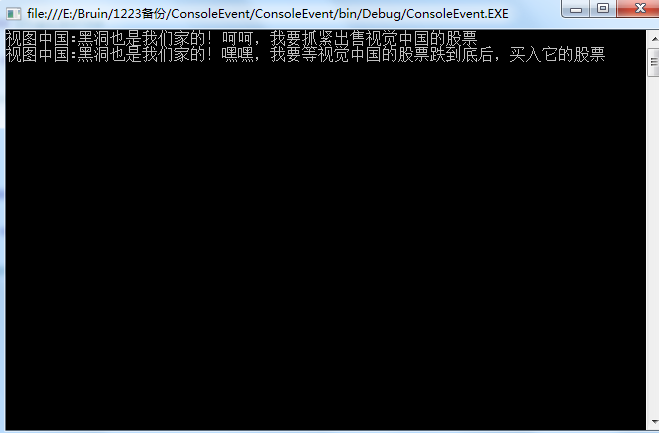

事件(Event)例如：最近的视觉中国‘黑洞事件’。我们大多数人（订阅者）是通过XX平台（发布者）得知的这一消息，然后订阅者A出售视觉中国的股票（触发的方法），订阅者B买入视觉中国的股票。
1 using System;
2 using System.Collections.Generic;
3 using System.Linq;
4 using System.Text;
5 using System.Threading;
6
7 namespace ConsoleEvent
8 {
9 class Program
10 {
11 static void Main(string[] args)
12 {
13 //实例化一个事件对象
14 Media eventSource = new Media("视觉中国:黑洞也是我们家的！");
15
16 //实例化关注事件的对象（订阅者）
17 StupiderOne obj1 = new StupiderOne();
18 StupiderTwo obj2 = new StupiderTwo();
19
20 //使用委托把对象及其方法注册到事件中
21 eventSource.BlackHoleEvent += new BlackHoleEventHandle(obj1.SendStock);
22 eventSource.BlackHoleEvent += new BlackHoleEventHandle(obj2.BuyStock);
23
24 //事件到了触发黑洞事件，事件的调用
25 eventSource.TimeUp();
26 Console.Read();
27 }
28 }
29
30 //第一步：定义一个类型用来保存所有需要发送给事件接收者的附加信息
31 public class BlackHoleEventArgs : EventArgs
32 {
33 //表示事件的内容
34 private readonly string content;
35
36 public string Content
37 {
38 get { return content; }
39 }
40
41 public BlackHoleEventArgs(string content)
42 {
43 this.content = content;
44 }
45 }
46
47 //第二步：定义一个黑洞事件，首先需要定义一个委托类型，用于指定事件触发时调用的方法类型
48 public delegate void BlackHoleEventHandle(object sender, BlackHoleEventArgs e);
49 //定义事件成员
50 public class Subject
51 {
52 //定义黑洞事件
53 public event BlackHoleEventHandle BlackHoleEvent;
54
55 //第三步：定义一个负责引发事件的方法，它通知已关注的对象
56 protected virtual void Notify(BlackHoleEventArgs e)
57 {
58 //出于线程安全的考虑，现在将对委托字段的引用复制到一个临时字段中
59 BlackHoleEventHandle temp = Interlocked.CompareExchange(ref BlackHoleEvent, null, null);
60 if (temp != null)
61 {
62 //触发事件，与方法的使用方式相同
63 //事件通知委托对象，委托对象调用封装的方法
64 temp(this,e);
65 }
66 }
67 }
68
69 //定义触发事件的对象，事件源
70 public class Media : Subject
71 {
72 private string content;
73 public Media(string content)
74 {
75 this.content = content;
76 }
77 public void TimeUp()
78 {
79 BlackHoleEventArgs eventarg = new BlackHoleEventArgs(content);
80 //黑洞门来了，通知吃瓜们
81 this.Notify(eventarg);
82 }
83 }
84
85 //吃瓜对象
86 public class StupiderOne
87 {
88 public void SendStock(object sender, BlackHoleEventArgs e)
89 {
90 Console.WriteLine(e.Content + "呵呵，我要抓紧出售视觉中国的股票");
91 }
92 }
93
94 //吃瓜对象
95 public class StupiderTwo
96 {
97 public void BuyStock(object sender, BlackHoleEventArgs e)
98 {
99 Console.WriteLine(e.Content + "嘿嘿，我要等视觉中国的股票跌到底后，买入它的股票");
100 }
101 }
102 }运行结果：
